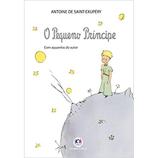
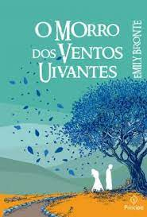
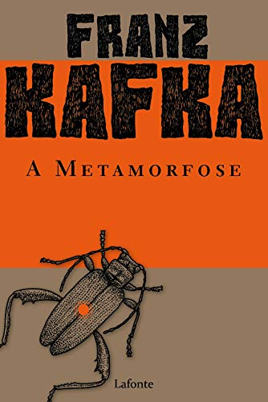

O Cortiço - Aluísio Azevedo

A leitura é de extrema importância para todos,ela libera a criatividade, proporciona viajar para muitos lugares, ajuda nas atividades esolares, estimula o vocabulário, o raciocínio, entre outros benefícios.
Porém, esse hábito vem sido deixado de lado,devido ao aumento do uso da internet. Para ajudar a esse hábito maravilhoso acontecer, procurei alguns livros incriveis para incentivar a leitura.
O Pequeno Príncipe - Antoine de Saint-Exupéry
O Cortiço - Aluísio Azevedo
O Morro dos Ventos Uivantes - Emily Brontë
A Matamorfose - Franz Kafka
1984 - George Orwell
A Revolução dos Bichos - George Orwell
Odisseia - Homero
Orgulho e Preconceito - Jane Austen
Dom Casmurro - Machado de Assis
Memórias Póstumas de Brás Cubas - Machado de Assis
O Retrato de Dorian Gray - Oscar Wilde
Fahrenheit 451 - Ray Bradbury
Romeu e Julieta - Shakespeare
Hamlet - Shakespeare
Harry Potter - J. K. Rowling
Jogos Vorazes- Suzanne Collins
As Crônicas de Nárnia - C. S. Lewis

Essa série é inspirada na trilogia de livros da autora Jenny Han
São três filmes inspirados em uma trilogia da mema autora de O Verão que Mudou Minha Vida